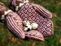

|
||
Premium Patterns Wintry Mix Mitts Love Bytes HawkeyeFree Patterns Kiddie Cadet Summerlin Ruffled Scarf Seamless DS Sock Simply Seamless Pouch Myriads of MushroomsExtras DIY Mitten Blocker Felt Patch Tutorial Yarn Dyeing Tutorial Needle Pouches Knitting Journal |
November 17, 2009 - Posted by Grace SchneblyLove BytesProject Specs Wow, time flies! I am so sorry we deserted our blog for so long, but I've come with a peace offering. Remember when I said I was working on a pattern for the Robot Mittens I finished in February? Well, it's finally complete! The pattern contains five color charts, detailed instructions, and helpful tips for knitting color work. There is also a supplemental PDF which contains charts with the colors transposed to aid you when working the mittens in a dark on light color scheme. I'd recommend this pattern for the intermediate to advanced knitter since it uses techniques such as working a two tone braid, mirrored increases and decreases, and stranding with two and three colors. If you've knit mittens with color work before, then these shouldn't give you any problems. I really enjoyed knitting these mittens. I guess I have to say that but it's true! It's so fun to watch the robots come to life, and because the mittens differ from each other, I never got bored. Of course I didn't have Second Mitten Syndrome, because I definitely couldn't leave a robot without its mate! As always, Malabrigo did not disappoint. My biggest problem with the yarn is that there are actually too many colors to choose from! In the end I decided to go with the tried and true combo of pink and brown. It's amazing how the feel of the mittens really changes when using different colors. I think it works in both the subdued hues of this pair, and the jewel tones I used last time around. This pattern could also easily be knit in a plied worsted weight yarn like Cascade 220 or Patons Classic Merino, but you can't deny that the subtle variation in the Malabrigo colorways adds to it! Since these mittens are knit using worsted weight yarn on smaller needles, the fabric turns out really warm and cushy. I originally mentioned that a fingerless pattern would be included, however the pattern was just getting to large and I couldn't fit it in. Hopefully I'll get around to releasing the fingerless version in the near future, and I can promise you that it won't take me 9 months this time! Thanks to all of you who volunteered to test knit these for me, sorry I didn't follow through but I hope you enjoy the pattern all the same! Also thanks to those who sent me messages and left such kind comments about the mittens on Ravelry and Flickr--you guys really inspired me to finish up this pattern! If you are uncomfortable attempting to knit with three strands at the same time, knit all of the heart stitches on the cuff in contrast color 2! |
   Recent ReviewsRecent Posts
 Our Favorites
|
| © 2007 KathrynIvy.com | ||
{kind=link}
{kind=link}
{kind=link}
{kind=link}